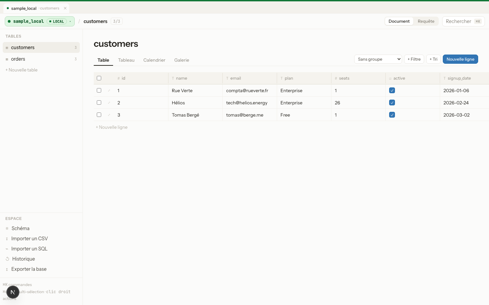
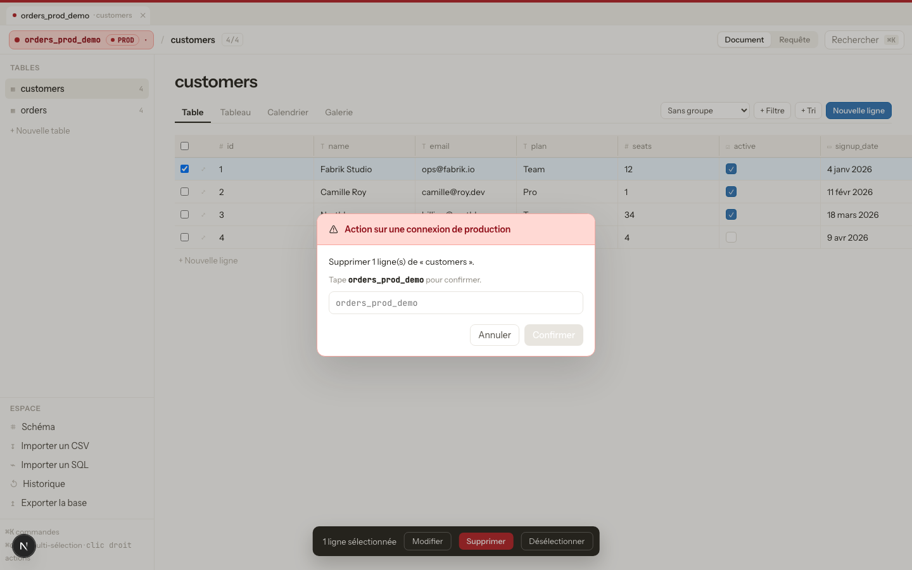
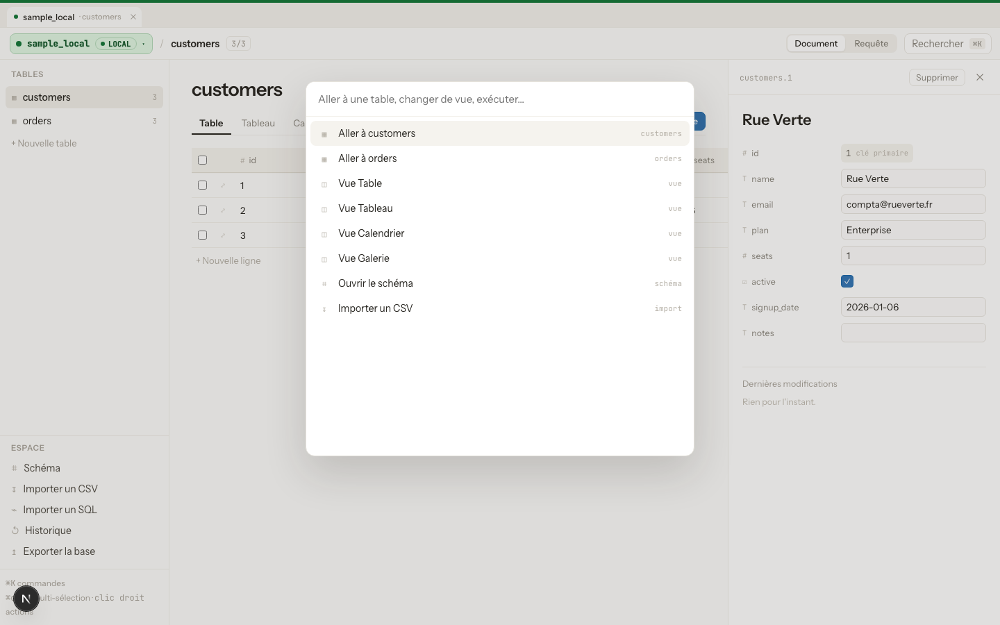
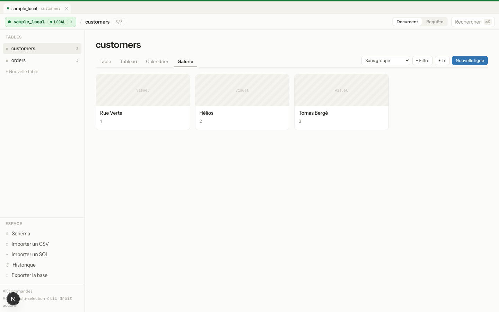

Overlook is a free, open-source, 100% web database editor with the UI/UX of a Notion-style tool — built around one rule: you should never be able to mistake a local database for a production one.

One misclick against the wrong connection shouldn't be able to take down production. So the app makes that connection impossible to miss — and impossible to act on by accident.
PostgreSQL, MySQL, and SQLite side by side — each tagged Local, Dev, Staging, Prod, or Custom.
Dropping a column, deleting a row, or running a write query on a prod connection requires typing the connection's name to confirm.
Table, Board, Calendar, and Gallery — with filters, sorting, and grouping built in.
⌘K to jump anywhere — tables, connections, actions — without leaving the keyboard.
Every edit is tracked. Made a mistake in a non-prod table? Roll it back in one click.
CSV import, SQL/NDJSON export, and a read-only-by-default SQL console for ad-hoc queries.
On any connection tagged "prod," destructive actions — deleting a row, dropping or altering a column, running a raw write query — are blocked until you type the connection's name. The schema panel is read-only by default.

Jump between connections and tables, switch views, or trigger an action without touching the mouse. Built for people who live in their editor.

Table, Board, Calendar, and Gallery views share the same filters, sorts, and groups — switch perspective without losing your place.

Clone it, point it at your database, and never mix up an environment again.